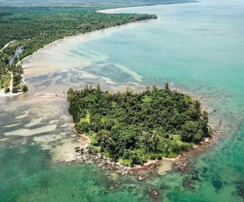

Giới thiệu chung
Phú Quốc, thiên đường nhiệt đới nằm trong Vịnh Thái Lan, là hòn đảo lớn nhất của Việt Nam nằm ở phía Tây Nam, cũng là hòn đảo lớn nhất trong quần thể 22 đảo nhỏ to khác nhau tại đây. Phú Quốc cùng với các hòn đảo khác tạo thành huyện đảo Phú Quốc thuộc tỉnh Kiên Giang.
Bản đồ